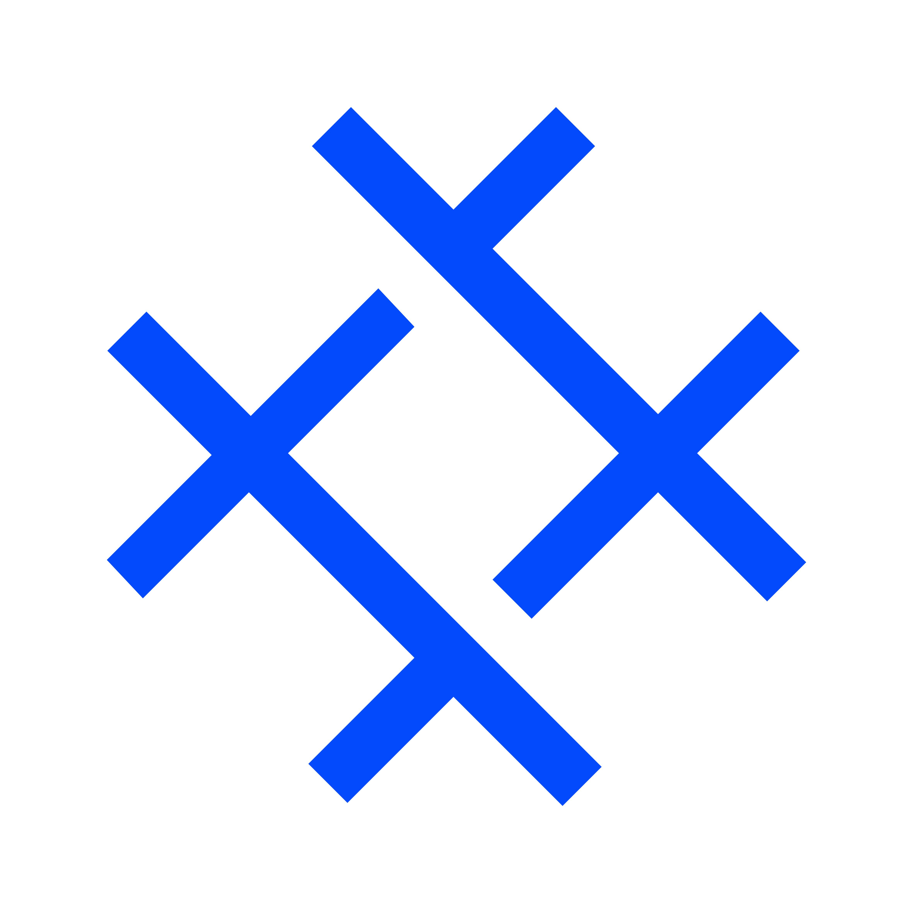

 Apriprogram
MyProjects
Campus Organization
The Campus Organization website serves as a central platform for students, faculty, and staff to access information, resources, and updates related to various clubs, societies, and administrative bodies within the campus community. It provides details about the structure, objectives, and activities of different campus organizations, facilitating communication and collaboration among members. Additionally, the website may feature event calendars, membership registration forms, and announcements, fostering engagement and involvement in campus life. With a user-friendly interface and comprehensive content, the Campus Organization website aims to enhance the overall campus experience and promote a vibrant and inclusive community spirit.

Website Faculty of Computer Sciences
The Faculty of Computer Sciences website is a digital platform that provides comprehensive information about the computer science faculty at an institution of higher education. This website encompasses various essential details such as the offered academic programs, faculty and staff members, curriculum, academic and non-academic activities, as well as available facilities. Additionally, the website offers up-to-date news and articles regarding the latest developments in the field of computer science, as well as job and internship opportunities for students and alumni. With a responsive and user-friendly design, this website facilitates prospective students, current students, staff, and the general public in accessing the necessary information about the computer science faculty. Through this website, the computer science faculty can extend its reach, enhance transparency, and strengthen relationships with stakeholders both within and outside the campus.
Sistem Visitasi
Sistem Visitasi berbasis website untuk unit pemasaran dan promosi di Universitas Muhammadiyah Metro Metro adalah platform digital yang memungkinkan staf marketing dan promosi untuk mengatur dan melacak kunjungan ke sekolah menengah, kampus, dan acara promosi lainnya. Dengan sistem ini, staf dapat melakukan penjadwalan kunjungan, mengirim konfirmasi kepada pihak yang dikunjungi, memantau riwayat kunjungan, dan menyimpan catatan hasil kunjungan. Selain itu, sistem ini juga dapat memberikan laporan dan analisis tentang efektivitas kampanye pemasaran dan promosi yang dilakukan, sehingga memungkinkan pengambilan keputusan yang lebih baik dalam perencanaan strategi pemasaran di masa depan. Dengan adanya sistem ini, proses visitasi dapat lebih terstruktur, efisien, dan terukur, sehingga mendukung pencapaian tujuan pemasaran dan promosi UM Metro secara lebih efektif.